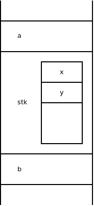
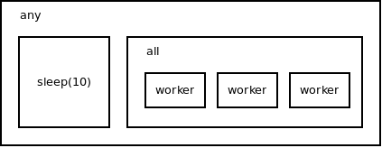

I've recently stumbled upon Nathaniel Smith's article about structured concurrency. It's very nice, very readable and explains the entire problem from the basics, so if you have no idea what structured concurrency is go and read it.
I've been dealing with the problem for many years and addressed it in several blog posts . However, I've always tried to keep it down to earth, very low level, partially because I was playing with it in C (maybe with a bit of assembly mixed in) and partly because I feel uneasy about discussing the grand high-level concepts before the low-level details are sorted out.
However, Nathaniel's blog post and the subsequent discussion made me realize that maybe it's already time to look a bit higher up the stack, to go beyond C's "if you don't do by hand it won't be done" approach and think about how would structured concurrency look like if it was natively supported by a high-level language.
What follows are some raw thoughs in no particular order.
Forget parallelism for a second. We are talking concurrency here:
Very much like control constructs ("if", "for", "while", "function call" and such) a coroutine is just a nice trick to hide the ugly old goto. When you launch a coroutine you jump to its code. When coroutine gets to a point where it would block, it jumps to the code of a different coroutine. And so on.
If implemented properly, coroutines can even get close to the classic control structures in the terms of performance.
Coroutine has a state (its entire stack and whatnot). "if" statement does not. That sounds like they are fundamentally different. But look at "for" statement. It does have the control variable. In C89 it's even declared outside of the construct:
int i;
for(i = 0; i != 10; ++i) {
...
}
The control variable is stored on the stack. Maybe we can do the same with coroutines? And actually, yes, libdill does allow for that kind of thing:
void foo() {
int x;
int y;
...
}
int a;
char stk[10000];
int b;
go_mem(foo(), stk, sizeof(stk));
The stack would then look like this:

The remaining problem is to make sure that foo() is not running any more when the scope the stack was declared in is exited. If it was still running, it would use memory on the stack below the stack pointer. If the stack grew again the new stack frames and the coroutine would overwrite each other.
It looks like we'll have to solve some scoping issues before we have a functional high-level concurrency model.
There are many good arguments for not allowing coroutines to be orphaned (not allowing a child coroutine to run after the parent coroutine exits). You can find them in Nathaniel's article .
The example of the stack-based coroutines is just a more drastic example of the same: Not only are orphaned coroutines bad design they will also cause memory corruption and undefined behavior.
And once you accept the fact that there will be no orphan coroutines you can imagine introducting concurrency into a programming language as a move from the dumb old linear call stack to a call tree.
See the animation below, but be warned. Once you see it you cannot unsee it. I've envisaged it some years ago and since then I have a hard time thinking of concurrency in any other way.
Each box in the picture is a stack frame:
Despite of what was said above there is a use case for orphaned coroutines. Specifically, sometimes you want a coroutine to be a part of an object allocated on the heap. Imagine, for example, a TCP socket object which contains a coroutine to send keepalives. The socket is created by one coroutine but it can be easily passed to a different, unrelated coroutine. If we do that we don't want the keepalives stop being sent just because the original coroutine exited.
And here we are back to "coroutine is like a variable" idea.
While variables are mostly nicely nested in the call stack, that's not always true. Every now and then you need to allocate variables on the heap. And C actually provides two mechanisms to access variables. If the variable lives on the stack you can address it as "a". When it lives on the heap you address it via a pointer "p->a".
Can we do the same thing with coroutines? Sure, why not? We can extend the language, for example, like this:
On the stack. The coroutine will be canceled when the scope is exited:
go(foo());
On the heap. The coroutine will be canceled when p is freed:
p->go(foo());
This principle comes from the observation that often there is an arbitrary number of coroutines doing the same thing. For instance, a network server will probably have one coroutine per connection. All those coroutines are exactly the same. And you, as a programmer, want to deal with all of them in a unified way rather than having to care about each one separately. In the end of the day, you want a single handle that points to that bundle of coroutines rather than many handles, each pointing to a different coroutine.
int b = bundle();
while(1) {
int s = tcp_accept(listener);
bundle_go(b, handle_tcp_connection(s));
if(shutdown_requested()) break;
}
close(b); /* All the TCP handlers are canceled here. */
libdill calls this concept a "bundle". Nathaniel Smith's Trio calls it a "nursery". Both names suck. The former becuase it's too generic (bundle of what?) and likely to name-clash with unrelated concepts, the latter because it's, for a such fundamental concept, too long (3 sylables!) and because the semantic relation between the name and the thing it represents is quite vague. Maybe we can do better? (Edited here: I've proposed "rope" but that name is already taken ).)
Off the top of my head:
The last one is not completely intuitive but we should take it seriously given that it seems to solve a bunch of pesky problems, like timeouts and Ctrl+C handling.
Consider this code:
int b = bundle(ANY);
bundle_go(b, foo());
bundle_go(b, sleep(10));
bundle_go(b, wait_for_ctrlc());
close(b);
If foo() finishes, it cancels both the timer and the Ctrl+C waiter. If timeout expires, foo() is canceled as well as the Ctrl+C waiter. If Ctrl+C is pressed, foo() is canceled as well as the timer. Exactly the semantics we want.
All that being said, the different kinds of cancellation seem to be profoundly different, in the way that may require different syntax.
For example, "cancel all threads" will be probably used to handle errors. You encounter an error and during the cleanup you just cancel the threads. That in turn means that you can't say whether you'll use "cancel" or "all" mechanism in advance, when you are creating the bundle. You don't know beforehand whether there will be an error or not.
As for "wait for all" and "wait for any", these you do want to specify in advance, because they are part of the business logic of the application. Having a single bundle that can be terminated as "any" in some cases and as "all" in other cases sounds like sloppy programming.
But even "all" and "any" don't seem to be two fully equal options. Some more thinking needed…
Consider the accept loop example above. We have a bundle of worker threads with "all" semantics. All threads have to finish before the bundle can be closed.
Now imagine that we want to shut down the bundle but we want to give the worker threads 10 seconds to finish gracefully.
We would have to somehow wrap the all-style bundle of worker threads into a any-style bundle together with a new timeout coroutine.

One can even imagine three or four levels of such nesting.
As for "no" alternative, we've seen the examples above. User creates a bundle and adds threads into it. Parent continues executing as normal:
int b = bundle(ALL);
while(1) {
int s = tcp_accept(listener);
bundle_go(b, handle_tcp_connection(s));
if(shutdown_requested()) break;
}
close(b);
It's not clear how could the "yes" alternative be nicely designed. The first thread gets a priviliged position automatically, simply because it's part of the creator function. Let's say we introduce all{} construct that will treat all the coroutines created within its context (including the main one) as belonging to an implicit bundle. Note how foo() and bar() feel different from the code within the all{} construct:
void foo() {
...
}
void bar() {
...
}
all {
go(foo());
go(bar());
i = i + 1;
}
Also, consider how would similar any{} construct work. Given that if any thread in the bundle finishes, all the other threads are canceled, the code within the any{} construct can be canceled at any point when sleep() exits:
any {
go(sleep(10));
bar();
baz(); /* Canceled here after 10s, goto end of the scope. */
quux();
}
One way to solve this kinds of problems would be to simply block the main coroutine while bundle is executing:
void bar() {
...
}
void foo() {
go(bar());
...
}
r = all(foo());
/* We get here only after both foo and bar are done. */
The solution is kind of neat. However, one thing I don't like about it is that it's the main coroutine which decides whether foo() should be treated as "all" or "any" bundle. Whereas, in fact, the distinction is part of foo's business logic.
Implementing structured concurrency in higher-level languages is not entirely trivial and poses some hard design questions.
Any opinion on the topic is welcome.
April 28th, 2018